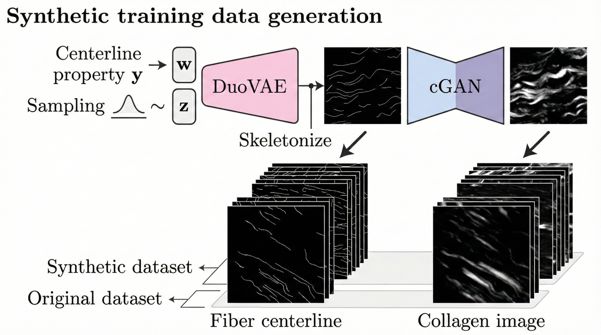

|
3D Simulation Super-Resolution
- Official PyTorch implementation of the 3D Simulation Super-resolution framework.
- Learns to enhance a fast, coarse simulation to match expensive high-resolution results.
github
|

|
DuoVAE
- Official PyTorch implementation of DuoVAE, a dual-VAE framework.
- Controls desired properties during generation for targeted synthesis.
- Produces diverse, realistic outputs robust to noisy labels.
- Pairs an auxiliary VAE with a primary VAE—no complex constraints or special
training tricks required.
github
|
paper
|
|

|
Collagen Fiber Centerline Extraction Network
- Synthesizes realistic collagen fiber images from centerline masks.
- Produces diverse synthetic image–mask training pairs to overcome the shortage of
large-scale manual annotations.
github
|
paper
|

|
Collagen Fiber Extraction and Analysis in Cancer Tissue
Microenvironment
- Trained on VAE-enriched synthetic data to extract collagen fiber centerlines from SHG
microscopy images.
- Evaluated on breast, pancreas, and kidney cancer tissue.
github
|
paper
|

|
Multi-Camera Calibration
- Calibrates multiple cameras using a planar checkerboard.
- Automated corner detection with VAE-based outlier removal.
- Initial parameter estimation followed by bundle adjustment refinement.
github
|